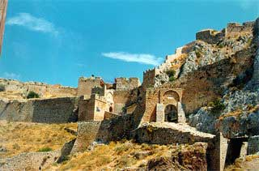

Ακροκόρινθος
 Το μεγαλύτερο και αρχαιότερο κάστρο της Πελοποννήσου, το κάστρο του Ακροκορίνθου, χτισμένο πάνω στο βράχο που αποτελούσε ένα από τα ισχυρότερα φυσικά οχυρά, προστάτευε με τα τείχη του την αρχαία πόλη της Κορίνθου μέχρι τον 2ο μ.Χ. αι. που καταστράφηκε από τον ρωμαίο ύπατο Μόμμιο. Από τα χρόνια του Ιουστινιανού (6ος αι.) που ξαναχτίστηκε μέχρι και την επανάσταση του 1821, οι διάφοροι κατακτητές (Νορμανδοί, Φράγκοι, Ενετοί, Τούρκοι) άφησαν ανεξίτηλα τα ίχνη τους πάνω στα τείχη του κάστρου, αφού καθένας τα επέκτεινε σύμφωνα με τις ανάγκες της εποχής του. Η φυσική πηγή νερού που διέθετε, έκανε το κάστρο ακόμη πιο ισχυρό, πρόσθετε ένα επιπλέον πλεονέκτημα στην στρατηγικής σημασίας θέση του. | ||